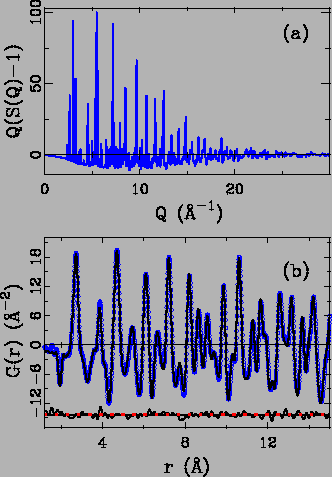
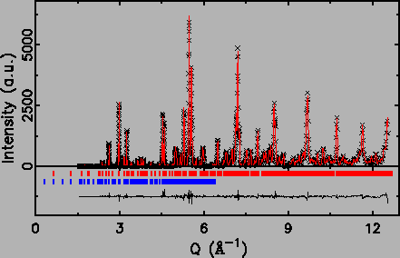
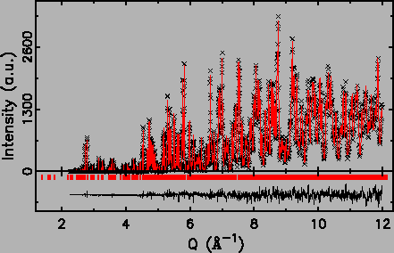

A powdered sample of La0.98Sr2.08Mn2O7 was synthesized using the method
described in Ref. [163]. The samples were characterized
using X-ray diffraction and susceptibility measurements. The oxygen
content were verified by measuring the c -axis parameter that was
found to fall on the expected curve for stoichiometric samples.
Neutron powder diffraction measurements were carried out on the
Special Environment Powder Diffractometer (SEPD) at the Intense Pulsed
Neutron Source (IPNS) at Argonne National Lab (ANL). The sample of
about 7.0 g was sealed in a cylindrical vanadium can with helium
exchange gas. Temperature dependence data were collected from 4 K to
room temperature using a closed cycle helium refrigerator.
Experimental PDFs were obtained the program
PDFgetN [42]. The resulting total-scattering structure
function, S(Q), and the PDF, G(r), from La0.98Sr2.08Mn2O7 (x = 0.54) at 4 K
is shown in Fig. 4.6. Superimposed on the PDF is a fit
to the data of the average structure model using the profile fitting
least-squares regression program, PDFFIT [11]. The
S(Q) data were terminated at
Qmax = 30 Å-1 before the Fourier
transform. This is a reasonable value for Qmax in typical PDF
measurements on SEPD.
Figure:
(a)
Reduced total scattering structure function,
F(Q) = Q(S(Q) - 1) from La0.98Sr2.08Mn2O7 at 4 K. (b) The obtained experimental PDF, G(r) (open
circles). The solid line is a fit to the data of the
crystallographic model with the difference curve shown below
offset.
|
 |
Rietveld refinements of the same diffraction data were also carried
out using program GSAS [68] with the conventional
tetragonal crystallographic cell: space group I4/mmm,
a = b = 3.8666
Å, c = 19.8713 Å, La(Sr)1 (0.00, 0.00, 0.50), La(Sr)2 (0.00, 0.00,
0.32), Mn (0.00, 0.00, 0.10), O1 (0.00, 0.00, 0.00), O2 (0.00, 0.00,
0.19), O3 (0.00, 0.50, 0.09). The type A magnetic phase was added as
the second phase to account for the magnetic diffraction peaks.
Excellent fits were obtained for data at all temperatures.
Fig. 4.7 shows the exemplary Rietveld fit plot of
diffraction data at 4 and 300 K.
Figure:
Rietveld refinement results
of La2-2xSr1+2xMn2O7 at x = 0.54 neutron powder diffraction data at 4 (upper
panel) and 300 K (lower panel). Crosses (×) are experimental
data, solid lines are the calculated values from refined structure
model, the difference curve is shown offset below. The short bars
indicate the Bragg reflection positions from nuclear (upper) and
magnetic structures, respectively.
|

 |
Xiangyun Qiu
2005-02-18